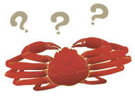

2010年12月号
「ズワイ、越前、松葉」はみんな同じってホント？

「ズワイ・越前・松葉」といった名前の「蟹」がありますが、これらの違いを知らない人は意外に多いのでは？
結論から言いますと、3つとも同じ種類の蟹で、「ズワイ蟹」のことを別名で「越前蟹」や「松葉蟹」と呼んでいます。この呼び名は、捕れた場所の違いによるもので、北陸沖（福井沖）で捕れたものを「越前」、そして、山陰沖（鳥取沖・島根沖）で捕れたものを「松葉」と呼び、「ズワイ」という呼び名が使われているのは、北海道、オホーツク、ロシア、カナダ、韓国などといった、いわば「その他の産地」ということになります。
また、｢ズワイ蟹｣と「紅ズワイ蟹」は、そもそも種類が違っていて、蟹の腕の内側が白いのが「ズワイ蟹」で、内側も赤いのが「紅ズワイ蟹」です！お値段もまったく違いますからよくご注意のうえお買い求めください。
このように、同じ種類の蟹でも漁獲された産地によって名称に違いがあったり、同じような名称であっても種類がまったく違うものがあります。
蟹の旬が到来です。是非、「違いのわかる人」になって蟹を美味しくいただきましょう！！
結論から言いますと、3つとも同じ種類の蟹で、「ズワイ蟹」のことを別名で「越前蟹」や「松葉蟹」と呼んでいます。この呼び名は、捕れた場所の違いによるもので、北陸沖（福井沖）で捕れたものを「越前」、そして、山陰沖（鳥取沖・島根沖）で捕れたものを「松葉」と呼び、「ズワイ」という呼び名が使われているのは、北海道、オホーツク、ロシア、カナダ、韓国などといった、いわば「その他の産地」ということになります。
また、｢ズワイ蟹｣と「紅ズワイ蟹」は、そもそも種類が違っていて、蟹の腕の内側が白いのが「ズワイ蟹」で、内側も赤いのが「紅ズワイ蟹」です！お値段もまったく違いますからよくご注意のうえお買い求めください。
このように、同じ種類の蟹でも漁獲された産地によって名称に違いがあったり、同じような名称であっても種類がまったく違うものがあります。
蟹の旬が到来です。是非、「違いのわかる人」になって蟹を美味しくいただきましょう！！
 次月号へ
次月号へ